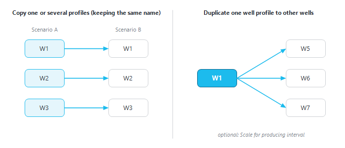

|
Duplicate / import profiles
1. Overview
The "Import / duplicate profiles" window writes well potentials (decline profiles) into a scenario without drawing them by hand. Use it to:
•copy profiles from one scenario to another, keeping the same well names;
•copy one well's profile to other wells (for example, new wells of the same reservoir);
•import profiles from a reservoir-simulator summary file (ECLIPSE RSM);
•import profiles pasted from Excel.
Open it from the Decline Curves window: click "Import / Duplicate profile" on its ribbon (see Decline curves). The imported profiles appear in the Decline Curves window like any other decline and can be edited there.

The two ways of copying profiles: same wells to another scenario, or one well to several other wells.
2. Choosing the source
Pick the source in the first list. The rest of the window adapts to it.
|
Source
|
What is copied
|
|
from Decline Curves
|
Saved decline curves of a scenario: Low, Mid, High or All cases.
|
|
from Eclipse RSM file
|
Well rates from an ECLIPSE RSM summary file. A file dialog opens as soon as you pick this source.
|
|
Import from Excel
|
A table pasted with Ctrl+V into the grid of the window (section 5).
|
3. Copying profiles between scenarios or wells (from Decline Curves)
1.Select "from Decline Curves".
2.Source side: choose the project ("Select Project to export Decline curves from"), the scenario, the well type ("Select Well type") and the "Forecast case" (Low, Mid, High or All).
3.Target side: choose the project ("Select Project to export Decline curves to"), the target scenario and the target "Forecast case". The target project list also offers "Analogues - <country>" entries, to copy a profile to analogue wells.
4.Choose the duplication method (section 3.1).
5.Optionally choose "Scale for producing interval" instead of "Do not scale for producing interval". Rates are then scaled by the ratio of the target well's producing interval to the source well's.
6.Click "-> Send to ->". A progress bar shows each well, then Precept confirms that the decline curves were generated.
3.1 Duplication methods
•"Copy one or several profiles from one scenario to another (keeping same name)": select one or more wells in the source well list. Each well's profile is written to the well of the same name in the target scenario.
•"Duplicate one well profile to other wells": select one source well, then one or more target wells. With "from Decline Curves", the "Reservoir:" and "Project:" lists filter the target wells.
The copied profile replaces the target well's existing profile for the chosen case. To duplicate inside one scenario, choose the same scenario on both sides.
4. Importing from an ECLIPSE RSM file
1.Select "from Eclipse RSM file" and pick the file.
2.Choose the well type, the target project, scenario and "Forecast case", and the duplication method.
3.Choose how timesteps are imported (section 6). Optionally enter a "Start Date" under "Import from:": only the timesteps from that date on are imported.
4.Click "-> Send to ->".
5. Importing from Excel
1.Select "Import from Excel".
2.Choose the target project, scenario and "Forecast case".
3.Choose the well type (or "Any"). Under "Import as :", choose "Multi-segment vs Time" (default) or "Multi-segment vs Cum". The grid shows the expected columns (table below).
4.Copy the rows in Excel (same column order as the grid) and press Ctrl+V in the grid. A header row starting with "Well" is ignored.
5.Choose how timesteps are imported (section 6), then click "-> Send to ->".
|
Well type
|
Columns (after "Well", then "Date" for vs Time or the cumulative for vs Cum)
|
|
Oil Producer
|
[Cum Oil], Liquid, BSW, GOR, Gas-lift
|
|
Gas Producer
|
[Cum Gas], Gas, WGR, CGR, Gas-lift
|
|
Water Injector
|
[Cum Water Injection], Water Injection
|
|
Gas Injector
|
[Cum Gas Injection], Gas Injection
|
|
Any
|
[Cum Oil], Liquid, BSW, GOR, Gas-lift, Water Injection, Gas Injection
|
The column in brackets is present only with "Multi-segment vs Cum"; "Date" is present only with "Multi-segment vs Time". Values are in the asset's units, shown in the column headers. Several wells can be pasted at once; the "Well" column tells the rows apart. Each name must be a well of the target scenario, a new profile of that scenario, or a type curve; other names are skipped.
6. Timestep options
•"Import all timesteps": every row or timestep becomes a point of the profile.
•"Let Precept manage timestep": Precept keeps only the points that matter: the first and last points, the openings and closures, and the points where the rate or a ratio has changed by more than about 10 to 15 % since the last kept point. This gives a lighter profile with the same shape.
7. Messages
•"Please select the scenario you want to copy data to !": no target scenario selected.
•"Please select the forecast case you want to copy data to (low / Mid / High) !": no target case selected.
•"Please select at least one well to duplicate profile from.": no source well (or no target well) selected.
•"There is no data to copy !": the Excel grid is empty.
|